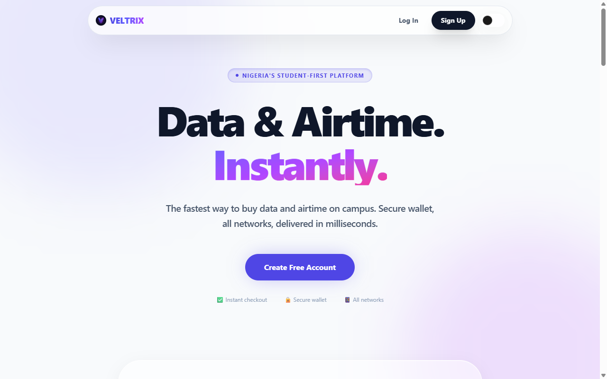

A unified suite of intelligent systems and fintech platforms. Explore Veltrix VTU, Veltrix Core, and the future roadmap towards a fully integrated mobile ecosystem.
Veltrix exists to build practical digital systems that help people connect, create, learn, and grow.
Providing essential telecommunications utility and instant mobile top-up systems to bridge communities and campuses.
Enabling creators and businesses to bootstrap websites and professional digital profiles dynamically with intelligent assistants.
Developing AI architectures capable of supervised fact learning, custom storage audits, and automated knowledge retention.
Starting from simple utility tools and expanding sequentially into context-aware mobile operating ecosystems.
The vision is not to create isolated products. The vision is to create an ecosystem of connected systems that work together, passing transactional capabilities, local intelligence, and UI automation across a unified framework.
Building practical digital systems one version at a time.
“This ecosystem is being built by a student who started with curiosity, limited resources, and a determination to create useful systems.”
Nigeria's premier student-first telecommunications and digital top-up platform. Delivers data, airtime, and rewards instantly on campus.
Veltrix is engineered around strict security protocols to safeguard user funds and sensitive information:
The platform includes an administrative control center allowing managers to track and moderate system-wide processes:

Veltrix VTU is already operational and represents the commercial foundation of the ecosystem, providing direct telecommunications utilities to students.
A local personal and business intelligence engine. What began as a pulsing white dot on a black screen evolved into a modular, learning assistant with persistent memory.
A single white dot centered on a black screen representing potential.
How our current platforms and future horizons stack together to form a cohesive, intelligent software environment.
Student-first telecommunications utility that serves as the commercial gateway of the Veltrix brand.
Personal and business intelligence engine providing memory, knowledge retrieval, and custom scripting assistance.
An AI-powered website and digital creation platform providing design assistance and templates to businesses.
AI-native Android-based OS incorporating Core as the supervised system-level assistant.
Interact with a simulated Veltrix Core directly from this presentation. Type help to see available commands.
[BOOT] Initializing Systems...
Loading Memory... (0 entries found)
Loading Knowledge... (5 categories loaded)
Veltrix Core Online. Type hello to begin.
From single transactional tools to ambient, context-aware user assistants. Discover how Veltrix scales into a complete ecosystem.
A telecommunications platform for data and airtime purchase with user authentication, wallet funding, Paystack integration, database management, transaction tracking, provider API integration, and admin operations.
An AI-powered personal/business intelligence system that started as a white dot on a black background and evolved into memory, knowledge, learning, personality, tasks, notes, fact management, themes, reports, and modular architecture.
An AI-powered website and digital creation platform.
Veltrix OS is a future Android-based operating system designed around AI assistance, productivity, personalization, and supervised automation.
Future Veltrix Core capabilities under research and planning will expand the engine into a powerful local utility:
Internet-assisted research for live knowledge expansions.
Intelligent workspace management, file structure auditing, and organization suggestions.
Coding assistance, planning suggestions, and scripting automations.
Personal habits mapping and workflow suggestions to optimize screen productivity.
Visual status indicators detailing the development status of all Veltrix platforms.